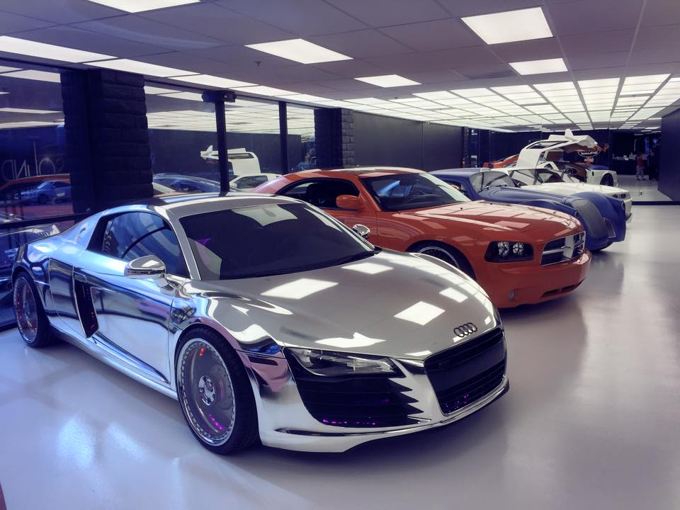
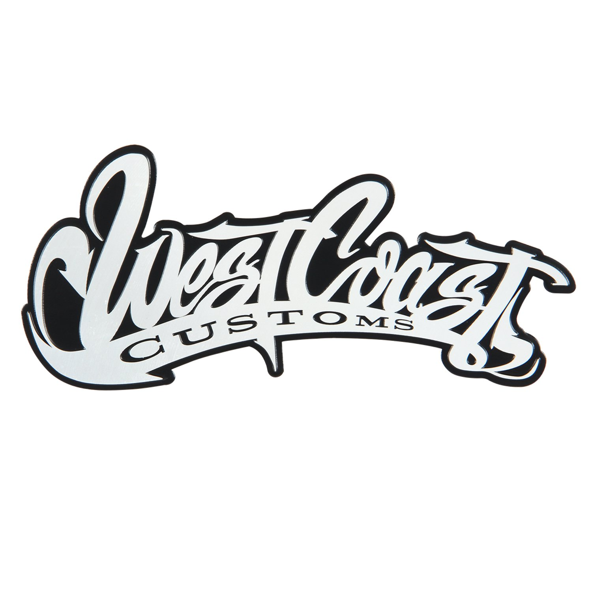

АВТОМОБИЛИ
Уверен, всем вам знакома эта компания по передаче "Тачка на прокачку", выходившей на MTV в 2004-2013 годах, где рэппер Xzibit выбирал самую отвратительную машину из возможных, а команда WCC превращала ее в уникальный автомобиль.
Вашему вниманию предложат сувенирную лавку и небольшой шоу-рум, большинство автомобилей в котором принадлежат исполнителю и продюсеру Will I Am.

За дополнительные 20$ вам предложат экскурсию, в которой расскажут подробнее о всех автомобилях, покажут звукозаписывающую студию, которую Райн построил для своих гостей и сына, а также проведут в мастерскую.
Также за 75$ вы можете получить VIP тур — все тоже самое, только в конце вас встретит Райан, даст автограф и сфотографируется с вами.
Возможности компании в сфере доработки автомобилей практически безграничны, а вот наличие вкуса и пожелания владельцев — на их совести. Если вам не нравится то, что выезжает из ворот компании — ваше право, но не оценить качество, с которым это все сделано — невозможно.
